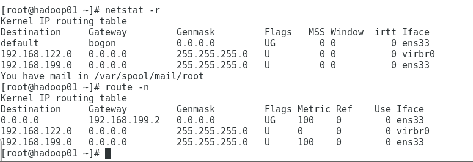

# 网络配置
# ifconfig 详解
ifconfig 命令可以显示或配置网络设备 (网络接口卡) , 也可以修改这些配置。
用 ifconfig 命令配置的网卡信息，在网卡重启后机器重启后，配置就不存在。要想将上述的配置信息永久保存，那就要修改网卡的配置文件了。
DEVICE=“ens33” # 网卡名称
// UP：表示 “接口已启用”。
// BROADCAST ：表示 “主机支持广播”。
// RUNNING：表示 “接口在工作中”。
// MULTICAST：表示 “主机支持多播”。
// MTU:1500（最大传输单元）：1500 字节
//inet ：网卡的 IP 地址。
//netmask ：网络掩码。
//broadcast ：广播地址。
// 网卡的 IPv6 地址
// 连接类型：Ethernet (以太网) HWaddr (硬件 mac 地址)
//txqueuelen (网卡设置的传送队列长度)
// RX packets 接收时，正确的数据包数。
// RX bytes 接收的数据量。
// RX errors 接收时，产生错误的数据包数。
// RX dropped 接收时，丢弃的数据包数。
// RX overruns 接收时，由于速度过快而丢失的数据包数。
// RX frame 接收时，发生 frame 错误而丢失的数据包数。
// TX packets 发送时，正确的数据包数。
// TX bytes 发送的数据量。
// TX errors 发送时，产生错误的数据包数。
// TX dropped 发送时，丢弃的数据包数。
// TX overruns 发送时，由于速度过快而丢失的数据包数。
// TX carrier 发送时，发生 carrier 错误而丢失的数据包数。
//collisions 冲突信息包的数目。
lo: 表示主机的回坏地址，这个一般是用来测试一个网络程序，但又不想让局域网或外网的用户能够查看，只能在此台主机上运行和查看所用的网络接口。
ifconfig 的配置针对当前起作用，, 当服务器进行重启启动，配置的 IP 和掩码等信息都会丢失因为 ifconfig 的没有把配置写入到配置文件，当系统重新启动中，会重新加载网络配置文件，因此配置会丢失
ifconfig 命令 参数具体见 https://www.runoob.com/linux/linux-comm-ifconfig.html
# 网络配置文件
网络接口配置文件均存放在 /etc/sysconfig/network-scripts/ 目录下
[root@node ~]# cat /etc/sysconfig/network-scripts/ifcfg-ens33 | |
TYPE=Ethernet | |
PROXY_METHOD=none | |
BROWSER_ONLY=no | |
BOOTPROTO=none | |
DEFROUTE=yes | |
IPV4_FAILURE_FATAL=no | |
IPV6INIT=yes | |
IPV6_AUTOCONF=yes | |
IPV6_DEFROUTE=yes | |
IPV6_FAILURE_FATAL=no | |
IPV6_ADDR_GEN_MODE=stable-privacy | |
NAME=ens33 | |
UUID=3693f084-6c9a-4b4e-82ef-62377f4c3502 | |
DEVICE=ens33 | |
ONBOOT=yes | |
IPADDR=192.168.10.100 | |
PREFIX=24 | |
GATEWAY=192.198.10.1 | |
################################# | |
下面介绍改配置文件中的每一行的含义。 | |
################################# | |
DEVICE=:网卡设备名 | |
HWADDR=:网卡的物理地址 | |
TYPE=:网卡的类型 | |
UUID=:网卡的UUID | |
IPADDR=:IP地址 | |
NETMASK=:子网掩码 | |
GATEWAY=:网关 | |
DNS1=:DNS | |
ONBOOT=:该网卡是否激活 | |
NM_CONTROLLED=:网络是否由NetworkManager进行管理 | |
BOOTPROTO=：启动远程协议为静态设置 |
# 路由的查看及配置
路由 (route) 就是分组在因特网上从一台计算机传输到另一台计算机的实际路径。
因特网上的每个路由器都存储有一张表，称为路由表 (routing table), 路由器正是依据路由表的内容将各个 IP 分组转发到正确的去处。
路由，路由器，路由表的区别:
路由：既可以指计算机之间的传输路径，又可以指传输这一动态过程
路由器：设备，即完成路由这一动态过程的设备
路由表：信息，是储存在路由器中的用来路由的信息
查看路由命令：netstat -r
route -n

查看本机路由信息route -n
添加一条默认路由，临时生效 (重启后就会失效)route add default qw 192.168.10.1
删除一条默认路由route del default gw 192.168.10.1
添加一条静态路由，发往 192.168.8.62 这个网段的全部要经过网关 192.168.1.1route add-net 192.168.8.0 netmask 255.255.255.0 gw 192.168.1.1
删除一条静态路由，删除的时候可以不写网关route del -net 192.168.8.0 netmask 255.255.255.0 gw 192.168.1.1
设置包转发功能:
开启 Liunx 的路由转发功能:
编辑 /etc/sysctl.conf 设置 net.pv4.p forward=1
临时配置：echo "1" > /proc/sys/net/ipv4/ip_forward
# DNS
Linux 下查看本地的 DNS:
1.cat /etc/resolv.conf
2.nslookup www.baidu.com
# DNS 查询工具
nslookup 是一个能够查询互联网域名服务器信息的程序。
他有两种工作模式，即 "交互模式" 和 "非交互模式"
在" 交互模式 " 下，用户可以向域名服务器查询各类主机、域名的信息，或者输出域名中的主机列表。
而在 “非交互模式 " 下，用户可以针对一个主机或域名仅仅获取特定的名称或所需信息。Dig 是一个在类 Unix 命令行模式下查询 DNS 包括 NSi 录，A 记录，MX 记录等相关信息的工具。
dig 命令:
查询一台主机，但是默认情况下，Dig 的输出信息很详细
最常用的查询是 A 记录，TXT (文本注释) , MXi 录，NS 记录
# DNS 域名解析中添加的各项解析记录
A 记录： 将域名指向一个 IPv4 地址（例如：100.100.100.100），需要增加 A 记录
CNAME 记录： 如果将域名指向一个域名，实现与被指向域名相同的访问效果，需要增加 CNAME 记录。这个域名一般是主机服务商提供的一个域名
MX 记录： 建立电子邮箱服务，将指向邮件服务器地址，需要设置 MX 记录。建立邮箱时，一般会根据邮箱服务商提供的 MX 记录填写此记录
NS 记录： 域名解析服务器记录，如果要将子域名指定某个域名服务器来解析，需要设置 NS 记录
TXT 记录： 可任意填写，可为空。一般做一些验证记录时会使用此项，如：做 SPF（反垃圾邮件）记录
AAAA 记录： 将主机名（或域名）指向一个 IPv6 地址（例如：ff03:0:0:0:0:0:0:c1），需要添加 AAAA 记录
SRV 记录： 添加服务记录服务器服务记录时会添加此项，SRV 记录了哪台计算机提供了哪个服务。格式为：服务的名字。协议的类型（例如：_example-server._tcp）。
SOA 记录： SOA 叫做起始授权机构记录，NS 用于标识多台域名解析服务器，SOA 记录用于在众多 NS 记录中那一台是主服务器
PTR 记录： PTR 记录是 A 记录的逆向记录，又称做 IP 反查记录或指针记录，负责将 IP 反向解析为域名
显性 URL 转发记录： 将域名指向一个 http (s) 协议地址，访问域名时，自动跳转至目标地址。例如：将 www.liuht.cn 显性转发到 www.itbilu.com 后，访问 www.liuht.cn 时，地址栏显示的地址为：www.itbilu.com。
隐性 UR 转发记录 L： 将域名指向一个 http (s) 协议地址，访问域名时，自动跳转至目标地址，隐性转发会隐藏真实的目标地址。例如：将 www.liuht.cn 显性转发到 www.itbilu.com 后，访问 www.liuht.cn 时，地址栏显示的地址仍然是：www.liuht.cn。
Reference:https://www.cnblogs.com/bluestorm/p/10345334.html
# iptables 详解
# 防火墙类型
# 包过滤防火墙
在 Linux 系统下，包过滤功能是内建于核心的 (作为一个核心模块，或者直接内建) , 同时还有一些可以运用于数据包之上的技巧，不过最常用的依然是查看包头以决定包的命运。包过滤防火墙将对每一个接收到的包做出允许或拒绝的决定。具体地讲，它针对每一个数据包的包头，按照包过滤规则进行判定，与规则相匹配的包依据路由信息继续转发，否则就丢弃。包过滤是在 IP 层实现的，包过滤根据数据包的源 P 地址、目的 IP 地址、协议类型 (TCP 包 UDP 包、ICMP 包)、源端口、目的端口等包头信息及数据包传输方向等信息来判断是否允许数据包通过。 包过滤也包括与服务相关的过滤，这是指基于特定的服务进行包过滤，由于绝大多数服务的监听都驻留在特定 TCP/UDP 端口，因此，为阻断所有进入特定服务的链接，防火墙只需将所有包含特定 TCP/UDP 目的端口的包丢弃即可
# 状态检测防火墙
状态检测防火墙在网络层有一个检查引擎截获数据包并抽取出与应用层状态有关的信息，并以此为依据决定对该连接是接受还是拒绝。这种技术提供了高度安全的解决方案，同时具有较好的适应性和扩展性。状态检测防火墙基本保持了简单包过滤防火墙的优点，性能比较好，同时对应用是透明的，在此基础上，对于安全性有了大幅提升。这种防火墙摒弃了简单包过滤防火墙仅仅考察进出网络的数据包，不关心数据包状态的缺点，在防火墙的核心部分建立状态连接表，维护了连接，将进出网络的数据当成一个个的事件来处理。可以这样说，状态检测包过滤防火墙规范了网络层和传输层行为，而应用代理型防火墙则是规范了特定的应用协议上的行为。
# iptables 介绍
netfilter/iptables (简称为 iptables) 组成 Linux 平台下的包过滤防火墙，与大多数的 Linux 软件一样，这个包过滤防火墙是免费的，它可以代替昂贵的商业防火墙解决方案，完成封包过滤、封包重定向和网络地址转换 (NAT) 等功能。
其实 iptables 服务不是真正的防火墙，只是用来定义防火墙规则功能的 "防火墙管理工具", 将定义好的规则交由内核中的 netfilter 即网络过滤器来读取，从而真正实现防火墙功能。
# iptables 基本信息
规则 (rules) 其实就是网络管理员预定义的条件，规则一般的定义为 "如果数据包头符合这样的条件，就这样处理这个数据包"
规则存储在内核空间的信息包过滤表中，这些规则分别指定了源地址、目的地址、传输协议 (如 TCP, UDP,ICMP) 和服务类型 (如 HTTP, FTP 和 SMTP) 等。
当数据包与规则匹配时，iptables 就根据规则所定义的方法来处理这些数据包，如放行 (accept) 、拒绝 (reject) 和丢弃 (drop) 等。
配置防火墙的主要工作就是添加、修改和删除这些规则。
# 表与链介绍
表 (tables) 提供特定的功能，iptables 内置了 4 个表，即 filter 表、nat 表、mangle 表和 raw 表，分别用于实现包过滤，网络地址转换、包重构 (修改) 和数据跟踪处理，这些表具有一定的优先级: raw-->mangle-->nat-->filter
链 (chains) 是数据包传播的路径，每一条链其实就是众多规则中的一个检查清单，每一条链中可以有一条或数条规则。
# 规则链
# 一些需要知道的规则链
- INPUT - 进来的数据包应用此规则链中的策略
- OUTPUT - 外出的数据包应用此规则链中的策略
- FORWARD - 转发数据包时应用此规则链中的策略
- PREROUTING - 对数据包作路由选择前应用此链中的规则 (记住！所有的数据包进来的时候都先由这个链处理)
- POSTROUTING - 对数据包作路由选择后应用此链中的规则 (所有的数据包出来的时候都先由这个链处理)
完整的规则链
规则表的先后顺序:
raw->mangle->nat->filter
规则链的先后顺序:
入站顺序 PREROUTING->INPUT
出站顺序：OUTPUT->POSTROUTING
转发顺序：PREROUTING->FORWARD->POSTROUTING
# iptables 传输数据包的过程
当一个数据包进入网卡时，它首先进入 PREROUTING 链，内核根据数据包目的 IP 判断是否需要转送出去。
如果数据包就是进入本机的，它就会向下移动，到达 INPUT 链。数据包到了 INPUT 链后，任何进程都会收到它。本机上运行的程序可以发送数据包，这些数据包会经过 OUTPUT 链，然后到达 POSTROUTING 链输出。
如果数据包是要转发出去的，且内核允许转发，数据包就会经过 FORWARD 链，然后到达 POSTROUTING 链输出。

# iptables 命令
iptables 格式:
iptables [-t 表名] 选项 [链名] [条件] [-j 控制类型]

详细解释见 https://www.cnblogs.com/vathe/p/6973656.html
有人总结的挺全的就不造轮子了（懒）。
# iptables 常识与常用命令
CentOS7 默认的防火墙不是 iptables, 而是 firewalle.
如果你没有安装 iptables 的话，你可以使用以下命令进行安装
systemctl stop firewalld
systemctl disable firewalld
systemctl mask firewalld
上面的意思是先屏蔽掉原有的 firewall 防火墙，下面我们就开始安装 iptables，至于为什么要安装 IPtables 我就不讲了
yum install iptables iptables-services -y
设置规则
#查看 iptables 现有规则
iptables -L -n
# 先允许所有，不然有可能会杯具
iptables -P INPUT ACCEPT
# 清空所有默认规则
iptables -F
# 清空所有自定义规则
iptables -X
# 所有计数器归 0
iptables -Z
# 允许来自于 lo 接口的数据包 (本地访问)
iptables -A INPUT -i lo -j ACCEPT
# 开放 22 端口
iptables -A INPUT -p tcp --dport 22 -j ACCEPT
# 开放 21 端口 (FTP)
iptables -A INPUT -p tcp --dport 21 -j ACCEPT
# 开放 80 端口 (HTTP)
iptables -A INPUT -p tcp --dport 80 -j ACCEPT
# 开放 443 端口 (HTTPS)
iptables -A INPUT -p tcp --dport 443 -j ACCEPT
# 允许 ping
iptables -A INPUT -p icmp --icmp-type 8 -j ACCEPT
# 允许接受本机请求之后的返回数据 RELATED, 是为 FTP 设置的
iptables -A INPUT -m state --state RELATED,ESTABLISHED -j ACCEPT
# 其他入站一律丢弃
iptables -P INPUT DROP
# 所有出站一律绿灯
iptables -P OUTPUT ACCEPT
# 所有转发一律丢弃
iptables -P FORWARD DROP
其他规则设定
#如果要添加内网 ip 信任（接受其所有 TCP 请求）
iptables -A INPUT -p tcp -s 45.96.174.68 -j ACCEPT
# 过滤所有非以上规则的请求
iptables -P INPUT DROP
# 要封停一个 IP，使用下面这条命令：
iptables -I INPUT -s ... -j DROP
# 要解封一个 IP，使用下面这条命令:
iptables -D INPUT -s ... -j DROP
#保存上述规则
service iptables save
开启 iptables 服务
#注册 iptables 服务
#相当于以前的 chkconfig iptables on
systemctl enable iptables.service
# 开启服务
systemctl start iptables.service
# 查看状态
systemctl status iptables.service
# Linux 进程
推荐一篇博客，《关于 Linux 进程你所需要知道的一起》
# top 命令：实时的查看进程的状态
top 是一个前台程序，所以是可以交互的
| 常用交互命令 | 解释 |
|---|---|
| q | 退出程序 |
| l | 切换显示平均负载和启动时间的信息 |
| P | 根据 CPU 使用百分比大小进行排序 |
| M | 根据驻留内存大小进行排序 |
| i | 忽略闲置和僵死的进程，这是一个开关式命令 |
| k | 终止一个进程，系统提示输入 PID 及发送的信号值。 |
# ps 命令
ps -ef 显示所有进程的详细信息
| UID | PID | PPID | C | STIME | TTY | CMD |
|---|---|---|---|---|---|---|
| 用户 ID | 进程的 ID | 父进程 ID | 进程占用 CPU 的百分比 | 进程启动的时间 | 该进程在那个终端上运行。若与终端无关，则显示？若为 pts/0 等，则表示由网络连和参数接主机进程。 | 命令的名称和参数 |
ps -aux 显示所有进程信息
ps -A 显示所有的进程信息
ps -u root 显示指定用户的进程信息
ps -l 显示目前属于本次登陆得 PID 相关信息
ps -ef|grep sshd|grep -v "grep" 配合管道符与 grep，显示 sshd 的进程信息。
# kill 命令
kill 命令：用于删除执行的程序或工作，通过向进程发送指定的信号来结束进程。
用法：kill [信号] PID
常用信号：
2 结束进程，不是强制性的，"Ctrl + C" 发出的就是 kill -2 信号
3 退出
9 杀死进程，强制结束进程。
# 端口
在 Linux 操作系统下，系统共定义了 65536 个可用的端口。
对于 0-1023 端口，都需要 root 身份才能启用，这些端口主要用于系统一些常见的通信服务中。比如: 21 ftp 服务、22 ssh 服务、80 http 服务等...
端口的开启和关闭也就是软件服务的启动和关闭
# chkconfig 命令
chkconfig 来判断服务是开启还是关闭状态
例如 chkconfig --list sshd
# netstat 命令
netstat 命令：用于显示 tcp, udp 的端口和进程情况
用法:
netstat [选项]
-a 显示所有
- t 仅显示 tcp 相关选项
- u 仅显示 udp 相关选项
- n 拒绝显示别名，能显示数字的全部转化为数字
- l 仅列出在 Listen (监听) 的服务状态
- p 显示建立相关链接的程序名
常用命令:
netstat-antlp // 查看当前所有 tcp 端口
netstat-antulp|grep 80 // 查看所有 80 端口使用情况
# linux 计划任务
计划任务，就是在约定好的时间执行已经计划好的工作。
未来的某时间点执行一次某任务或者周期性的运行某个任务，执行结果会通过邮形式发送给用户。
# 安全与计划任务
挖矿病毒：
使用 top 查看 CPU，显示进程占 cpu99% 以上。杀掉进程后，到了晚上还是会自动运行进程。
检测定时任务，发现有一个异常的定时任务
# at 命令
at 命令 一次性计划任务
默认自带 atyum install at -y 下载 at
开启服务:
service atd start
用法:
at (选项)
选项
- f: 指定包含具体指令的任务文件；
-q: 指定新任务的队列名称；
-l: 显示待执行任务的列表；
-d: 删除指定的待执行任务；
-m: 任务执行完成后向用户发送 E-mail;
实例
at 10:00 确切时间
at now +10 minutes 十分钟后执行
at 17:04 04/04/2018 2018483817:04 执行
at 17:04 04/04/2018 2018483817:04 执行
at 1am tomorrow 明天上午一点运行作业
at-c id 根据作业 ID 查看执行细节
atq 查看待处理的任务
atrm id 删除 id 的任务
# crondtab 命令
crondtab 命令 周期性计划任务
crond 是 linux 下用来周期性的执行某种任务或等待处理某些事件的一个守护进程。
Linux 系统上系统服务是默认启动的，使用者控制计划任务命令:crontab 命令。
crontab 其实是一个命令，用来读取和修改名为 crontab 的文件。/etc/crontab 文件包含了要定时执行的程序列表。
安装 crontab: 默认自带yum install crontabs
服务命令:
service crond start // 启动服务 service crond stop // 关闭服务 service crond restart// 重启服务 service crond reload // 重新载入配置
crontab 命令 周期性计划任务
1、命令格式:
crontab [-u user] file
crontab [-u user] 【选项】
常用选项:
-e: 编辑计划任务 edit
-l: 查看计划任务 display
-u: 指定用户
常用命令:
crontab -l 列出当前用户的计划任务
crontab -r 删除当前用户所有的计划任务
crontab -e 编辑当前用户的计划任务
crontab-e -u root 编辑 root 用户的计划任务
第一列：分钟 (0-59)
第二列：小时 (0-23)
第三列：天 (1-31)
第四列：月 (1-12)
第五列：周 (0-6) 0 表示周日
"" 表示所有的取值，就是 / 1"
"/" 表示每的意思
*/5" 表示每 5 个单位
"-" 表示从某个数字到某个数字
"," 表示分散的数字
实例
# 日志服务
# 基础信息
在 CentOS 6.x 中，日志服务已经由 rsyslogd 取代了原先的 syslogd.
rsyslogd 相比 syslogd 具有一些新的特点:
基于 TCP 网络协议传输日志信息。
更安全的网络传输方式。
有日志信息的即时分析框架。
后台数据库。
在配置文件中可以写简单的逻辑判断。
与 syslog 配置文件相兼容。
查看 rsyslogd 服务是否启动ps aux|grep "rsyslogd"|grep -v "grep"
查询 rsyslogd 服务的自启动状态chkconfig --list|grep "rsyslog"systemctl list-unit-files|grep "rsyslog"
在 Linux 系统中有一部分日志不是由 rsyslogd 服务来管理的，比如 apache 服务，它的日志是由 Apache 软件自己产生并记录的，并没有调用 rsyslogd 服务，但是 apache 日志文件的格式和系统默认日志的格式是一致的。
在 Linux 系统中有一部分日志不是由 rsyslogd 服务来管理的，比如 apache 服务，它的日志是由 Apache 软件自己产生并记录的，并没有调用 rsyslogd 服务，但是 apache 日志文件的格式和系统默认日志的格式是一致的。
日志文件是重要的系统信息文件，其中记录了许多重要的系统事件，包括用户的登录信息、系统的启动信息、系统的安全信息、邮件相关信息、各种服务相关信息等。这些信息有些非常敏感，所以在 Linux 中这些日志文件只有 root 用户可以读取。
系统日志文件的保存位置是 /var/log/ 目录

日志服务 rsyslogd 记录的日志文件格式包含以下 4 列:
1. 事件产生的时间。
2. 产生事件的服务器的主机名。
3. 产生事件的服务名或程序名。
4. 事件的具体信息。
/var/log/secure 日志文件内容:
/var/log/secure 记录验证和授权方面的倍息，只要涉及账户和密码的程序都会记录，比如系统的登录、ssh 的登录、su 切换用户，sudo 授权，甚至添加用户和修改用户密码都会记录在这个日志文件中
/var/log/wtmp 永久记录所有用户的登陆、注销信息，同时记录系统的后动、重启、关机事件
/var/tun/ulmp 记录当前已经登录的用户的信息。这个文件会随着用户的登录和注销而不断变化，只记录当前登录用户的信息。
# rsyslogd 配置文件
rsyslogd 服务的配置文件是 /etc/rsyslog.conf , 其中主要定义了服务的名称、日志等级和日志记录位置。
该配置文件的基本格式如下所示:
authpriv.* /var/log/secure
# 服务名称 [连接符号] 日志等级 日志记录位置
# 日志等级
详细见 https://cnblogs.com/klb561/p/12014268.html
# 连接符
连接符号:
- "." 代表只要比后面的等级高的 (包含该等级) 日志都记录。比如，"cron.info" 代表 cron 服务产生的日志，只要日志等级大于等于 info 级别，就记录。
- ".=" 代表只记录所需等级的日志，其他等级的日志都不记录。比如，"*.=emerg" 代表人和日志服务产生的日志，只要等级是 emerg 等级，就记录。这种用法极少见，了解就好。
- ".!" 代表不等于，也就是除该等级的日志外，其他等级的日志都记录。
# 日志记录位置
日志记录位置：当前日志输出到哪个日志文件中保存
日志文件的绝对路径。例如: "/ar/log/secure"
系统设备文件。如 "/dev/lpo" 代表第一台打印机，如果日志保存位置是打印机设备，当有日志时就会在打印机上打印。
用户名。如果是 "root" , 把日志发送给 root 用户 (用户要在线) "*" 代表发送给所有在线用户，如 "mail**" 就会把 mail 服务产生的所有级别的日志发送给所有在线用户。发给多个在线用户，则用户名之间用 "," 分隔。
忽略或丢弃日志。如果接收日志的对象是 "~" , 则代表这个日志不会被记录，而被直接丢弃。如 "local3.*~" 代表忽略 local3 服务类型所有的日志都不记录。
# 日志管理
日志管理:
日志维护的最主要的工作就是把旧的日志文件删除，从而腾出空间保存新的日志文件。
logrotate 就是用来进行日志轮替的，就是把旧的日志文件移动并改名，同时创建一个新的空日志文件用来记录新日志，当旧日志文件超出保存的范围时就删除。
日志文件的命名规则:
- 服务加日期
- 服务加数字
查看日志备份文件
ls /var/log
logrotate 令可以进行日志转储 (轮替)
logrotate 命令会依据 /etc/logrotate.conf 配置文件的配置，来判断配置文件中的日志是否符合日志轮替的条件 (比如，日志备份时间已经满一周) , 如果符合，日志就会进行轮替。
/etc/logrotate.conf 配置文件的
cat /etc/logrotate.conf
详细讲解
http://c.biancheng.net/view/1106.html
# 系统服务
什么是系统服务？
服务是在后台运行的应用程序，并且可以提供一些本地系统或网络的功能。
我们把这些应用程序称作服务，也就是 Service.
Linux 中常见的服务有那些，这些服务怎么分类，服务如何启动，服务如何自启动，服务如何查看？
服务 Service, Daemon 这个词也经常伴随着出现。
Daemon 翻 i 成 "守护进程"
守护进程：就是为了实现服务、功能的进程。
比如，apache 服务就是服务 (Service) , 它是用来实现 Web 服务的。
那么，启动 apache 服务的进程是哪个进程呢？
httpd 这个守护进程 (Daemon) 。
在 Linux 中就是通过启动 httpd 进程来启动 apache 服务的。
也就是说，守护进程就是服务在后台运行的真实进程。
Linux 中的服务按照安装方法不同可以分为 RPM 包默认安装的服务和源码包安装的服务两大类。
区别:
RPM 包安装到系统默认位置，可以被服务管理命令识别；但是源码包安装到手工指定位置，当然就不能被服务管理命令识别了 (可以手工修改为被服务管理命令识别)。
# 启动服务
启动服务方式:
1) 使用 /etc/init.d/ 目录中的启动脚本来启动独立的服务
2) 使用 service 命令来启动独立的服务
1) 使用 /etc/init.d/ 目录中的启动脚本来启动独立的服务
所有独立服务的启动脚本都存放在 /etc/init.d/ 目录中，调用脚本就可以启动独立的服务了。
命令格式如下:
/etc/init.d/ 独立服务名参数参数:
start: 启动服务；
stop: 停止服务；
status: 查看服务状态；
restart: 重启动服务；
2) 使用 service 命令来启动独立的服务
在 CentOS 系统中，我们还可以依赖 service 命令来启动独立的服务。service 命令实际上只是一个脚本，这个脚本仍然需要调用 /etc/init.d/ 中的启动脚本来启动独立的服务。
service 命令格式如下:
service 独立服务名 start|stop|restart|..
service --status-all 查看所有服务
# 服务的自启动
使用 chkconfig 服务自启动管理命令
格式:
查看所有服务的自启动状态
chkconfig -list
设置某服务的自启动状态
chkconfig [--level 运行级别][独立服务名][on|off]
想把某个已经安装了的服务添加为系统服务，可以执行以下命令：
chkconfig --add 服务名称 (首先，添加为系统服务，注意 add 前面有两个横杠)
chkconfig -leve 启动级别 服务名 on
# 下载与安装
# wget
wget 是一个下载文件的工具，它用在命令行下
语法：wget [选项] url
选项：
-V 显示 wget 版本信息并退出。
-h 打印此帮助
- O 指定下载文件的别名。
# rpm
Linux rpm 命令用于管理套件，增强了程序安装卸载的管理。
RPM 的功能：打包、安装、查询、升级、卸载...
缺点: RPM 无法解决软件包的依赖关系
RPM 包的命名规范: name-version-release.os.arch.rpm
!{}(image021.png)
# yum
yum 基于 RPM 包管理，能够从指定的服务器自动下载 RPM 包和安装
优点：可以自动处理关联关系，并且一次安装所有依赖的软件包，无须繁琐地一次下载，安装。
语法 ：
yum [选项] [包……]
选项：
-h 帮助
- y 当安装过程中提示选择全部为 “yes”
-q 不显示安装过程
检测有没有安装 yum
yum -h
rpm -qa | grep yum
- 相关命令
1・列出所有可更新的软件清单命令: yum check-update
2 更新所有软件命令: yum update
3 仅安装指定的软件命令: yum install 包名称
4 仅更新指定的软件命令: yum update 包名称
5 列出所有可安装的软件清单命令: yum list
6 删除删除命令: yum remove 包名称
7 清除缓存命令:
清除缓存目录 (/var/cache/yum) 下的软件包
命令：yum clean packages
清除缓存目录 (/var/cache/yum) 下的 headers
命令：yum clean headers
清除缓存目录 (/var/cache/yum) 下旧的 headers
命令：yum clean oldheaders
清除缓存目录 (/var/cache/yum) 下的软件包及旧的 headers
命令：yum clean, yum clean all (= yum clean packages; yum clean oldheaders)
- yum list 相关命令

- 安装应用程序
语法: yum [-y] install 包 1 包 2…… 包 n
yum install wget 使用安装 wget
升级软件包
命令格式: yum update 包 1 包 2…… 包 n
yum check-update 检测可升级的包
卸载软件包
命令格式: yum remove 包 1 包 2…… 包 n
注意：卸载时注意依赖关系
# 文件打包和解压缩
linux 中常用的五种压缩格式: .zip .gz .tar.gz .bz2 .tar.bz2
打包和压缩:
打包是指将一大堆文件或目录什么的变成一个总的文件
压缩则是将一个大的文件通过一些压缩算法变成一个小文件
# tar 命令
Linux 中的很多压缩程序只能针对一个文件进行压缩，这样当你想要压缩一大堆文件时，你就得先借助另它的工具将这一大堆文件先打成一个包，然后再就原来的压缩程序进行压缩。
Liunx 下最常用的打包命令是 tar, 使用 tar 程序打出来的包我们常称为 tar 包，tar 包文件的命通常都是以.tar 结尾的。
生成 tar 包后，就可以用其它的程序来进行压缩了，所以首先就来讲讲 tar 命令的基本用法
语法:
tar 【选项】 打包文件包 源文件
选项:
-c: 打包
- v: 显示详细过程
- x: 解打包 / 压缩
- z: 通过 gzip 压缩 / 解压文件
- j: 通过 bz2 压缩 / 解压文件
- C: 解压到指定目录
- f filename: 指定打包后的文件名 (必选，这个参数是最后一个参数，后面只能接文件名)
常用命令:
tar -cf all.tar *.jpg #将所有.jpg 的文件打成一个名为 all.tar 的包
tar -xvf all.tar #解出 all.tar 包中所有文件，-x 是解开的意思
为了方便用户在打包解包的同时可以压缩或解压文件，tar 提供了一种特殊的功能 -- 就是 tar 可以在打包或解包的同时调用其它的压缩程序，比如调用 gzip.bzip2 等。
# 解压缩与压缩
# zip
zip 【选项】 【压缩文件】
选项:
-m 将文件压缩并加入压缩文件后，删除原始文件，即把文件移到压缩文件中。
-q 不显示指令执行过程。
-r 递归处理，将指定目录下的所有文件和子目录一并处理。
-v 显示指令执行过程或显示版本信息。
实例
将 /home/html/ 这个目录下所有文件和文件夹打包为当前目录下的 html.zip:
zip-qr html.zip /home/html
# unzip
unzip 【选项】 【压缩文件】
选项:
-l 显示压缩文件内所包含的文件 - V 执行是时显示详细的信息。
-q 执行时不显示任何信息。
-d <目录> 指定文件解压缩后所要存储的目录。
实例
解压文件unzip abc.zip
查看压缩文件中包含的文件:unzip-l abc.zip
# gzip
- tar 调用 gzipgzip 是 GNU 组织开发的一个压缩程序，.gz 结尾的文件就是 gzip 压缩的结果。与 gzip 相对的解压程序是 gunzip.
tar 中使用 - z 这个参数来调用 gzip 常用命令:
tar-czf all.tar.gz *.jpg #将所有.jpg 的文件打成一个 tar 包，并且将其用 gzip 压缩，生成一个 gzip 压缩过的包 all.tar.gz
tar-xzf all.tar.gz #将包 all.tar.z 解开
- tar 调用 bzip2bzip2 是一个压缩能力更强的压缩程序，.bz2 结尾的文件就是 bzip2 压缩的结果。与 bzip2 相对的解压程序是 bunzip
tar 中使用 - j 这个参数来调用 bzip2
常用命令:
tar -cjfall.tar.bz2 *.jpg #将所有.jpg 的文件打成一个 tar 包，并且将其用 bzip2 压缩，生成一个 bzip2 压缩过的包，包名为 all.tar.bz2
tar -xjf all.tar.bz2 #将上面产生的包解开